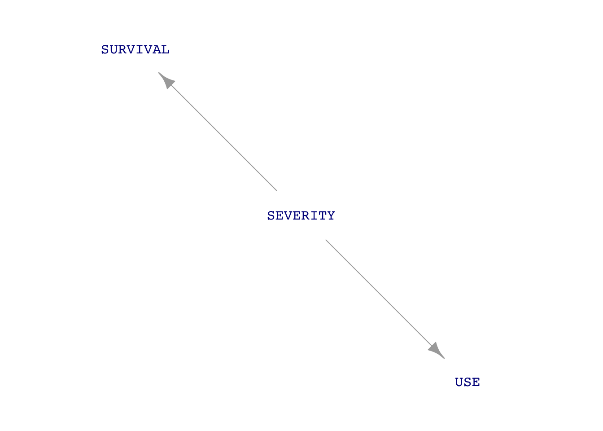
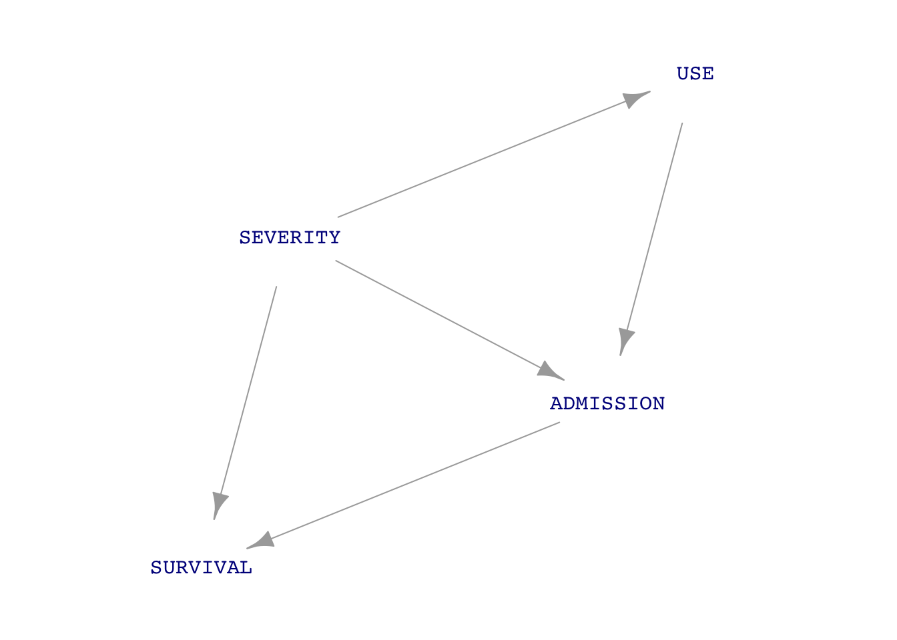

Galton %>% summarize(vh = var(height))| vh |
|---|
| 12.8 |
Galton %>% summarize(vh = var(height))| vh |
|---|
| 12.8 |
Interpretation: The heights of the people in the Galton data frame vary. The amount of this variability is the variance: 12.8 square-inches. In less strange units, the standard deviation is \(\sqrt{12.8\ \text{square-inches}} = 3.6\) inches
The most common action for the rest of this course will be to create a model and summarize it.
Example: lm(height ~ mother + father, data=Galton)
height ~ mother + father is a tilde expression that specifies the roles of variables in the model. height is the response variable. mother and father are the explanatory variables.data = Galton tells lm() to use the Galton data frame to construct the model corresponding to the tilde expression.Example: Summarizing functions R2() and conf_interval()
lm(height ~ mother + father, data=Galton) |> R2()| n | k | Rsquared | F | adjR2 | p | df.num | df.denom |
|---|---|---|---|---|---|---|---|
| 898 | 2 | 0.109 | 54.7 | 0.107 | 0 | 2 | 895 |
Interpretation: mother and father jointly explain about 10% of the variance in the height of their adult children.
lm(height ~ mother + father, data=Galton) |> conf_interval()| term | .lwr | .coef | .upr |
|---|---|---|---|
| (Intercept) | 13.900 | 22.300 | 30.80 |
| mother | 0.187 | 0.283 | 0.38 |
| father | 0.290 | 0.380 | 0.47 |
Interpretation: The model equation for a person’s height in inches is, according to this model:
\[\text{person's height} = 22.3 + 0.283\ \mathtt{mother} + 0.380\ \mathtt{father}\]
lm()) quantify how to account-for/explain the variation in the response variable in terms of the variation in the explanatory variables.Account-for/explain. Often when we use the word “explain” we mean to suggest a causal connection. For instance, this randomized clinical trial established that a particular blood-pressure drug leads to lower blood pressure, that is, it causes the blood pressure to go down.
When we say that “A causes B,” we don’t necessarily mean that A is the complete and total explanation for B. More often, we mean that “A contributes in some way to the value of B.” For instance, “high blood pressure increases mortality” does not mean that high blood pressure is the sole determinant of mortality. Instead, it means that high blood pressure contributes to an increased risk of mortality.
A DAG (Directed acyclic graph—unnecessarily intimidating name!) is a way of encoding a hypothesis of what causes what in a system. We discussed the system involving treating a battlefield casualty with a tourniquet. (Link to in-class activity.) The system—a “system” is a collection of components—involved USE of a tourniquet, SEVERITY of injury, staying alive long enough for ADMISSION to hospital, and post-hospital SURVIVAL. Common sense suggests some causal connections:
Other link were more hypothetical:
A DAG describes the hypothesized causal links among all the system components.

The clinical study looking at the relationship between tourniquet use and survival included only those patients admitted to the hospital, not the ones who died before admission. Their data did not demonstration a relationship between USE and SURVIVAL. That is to say, the hypothesized DAG as a result of the study was this:

In this second DAG, there is no causal connection between USE and SURVIVAL.
A critique of the clinical trial is that it didn’t consider ADMISSION, that is, both those soldiers who reached the hospital and those who didn’t. Consequently, even if there were no direct link between USE and SURVIVAL, a more complete DAG includes a possible indirect path, as in this third DAG:

The path USE \(\longrightarrow\) ADMISSION \(\longrightarrow\) SURVIVAL could not be demonstrated by the (imperfect) clinical study, even though it might well exist. Any decision about the efficacy of tourniquets would need to consider the possible path USE \(\longrightarrow\) ADMISSION \(\longrightarrow\) SURVIVAL.
Here’s a paradox: Effective use of tourniquets increases hospital mortality rates. Explain why this says something positive about tourniquet use.
Use of sample() and dag_draw() with DAGs.
What is a “random trial”
How (and why) to automate replication of random trials.
You can learn these things from the text and the worksheet for Lesson 20.